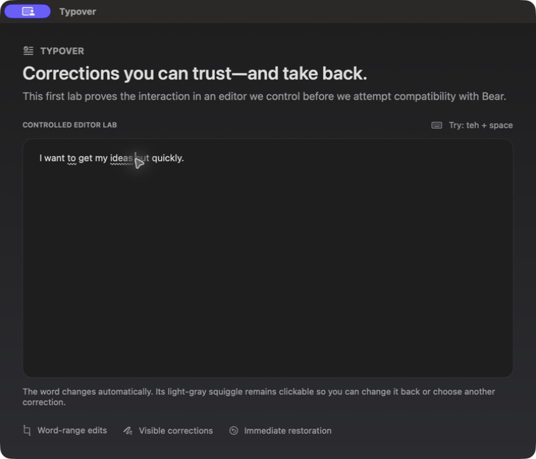

Established
Automatic word-boundary correction in the controlled editor; exact-range Bear replacement; clickable light-gray annotations; independent Change Back; bounded alternatives; continued typing preserved on one side.
Typover · a new writing primitive
Let people get the thought out. Correct the obvious. Mark every change. Make reversal immediate.
Micah Alpern · Hacker Dojo

The old interaction
I want ot get my ieas out quikly—but first I have to repair each word.
notice → interrupt thought → right-click → scan suggestions + unrelated commands → choose → repeat
The premise
The design problem is no longer finding a possible correction. It is earning permission to act without taking authorship away from the writer.
The new contract
Use context to fix clear, objective mistakes as soon as the word or sentence is complete.
Leave a low-salience gray squiggle under every automatic change.
One click restores the original or chooses another correction—without undoing the next thought.
The writer keeps moving
Typover corrects completed tokens while the caret moves forward. The marks remain; the interruption does not.
The gray squiggle
Clicking the quiet mark exposes the original first, followed by bounded alternatives. No generic context-menu junk.
Revert to “ieas”
teas
seas
peas
yeas
Aggressive, not reckless
| Signal | Typover does | The writer experiences |
|---|---|---|
| Clear typo | Correct immediately | Clean text with a quiet gray mark |
| Objective context error | Change the smallest exact range | The sentence improves without changing voice |
| Ambiguous or stylistic | Leave it alone | No invisible rewrite of intent |
| User reverts | Restore immediately and learn locally | Their preference wins next time |
Intelligence with a narrow job
The language model sees enough nearby context to resolve obvious intent. Its output is still constrained: no tone changes, no added facts, no broad rewrite, and no correction when uncertain.
Do not rewrite, rephrase, improve style,
change tone, or add facts.
Return no correction when the sentence
is acceptable or when you are uncertain.
original must be the smallest exact
contiguous substring copied verbatim,
and replacement must be its minimal correction.What the prototype proves
Automatic word-boundary correction in the controlled editor; exact-range Bear replacement; clickable light-gray annotations; independent Change Back; bounded alternatives; continued typing preserved on one side.
Installed multi-correction behavior in Bear, composition, Undo/Redo semantics, rapid-typing stress, and consistent geometry across more editors still require permissioned live validation.
Takeaway
Do not make writers triage mistakes. Fix the obvious. Mark the change. Give it back.
Typover · intelligence without interruption